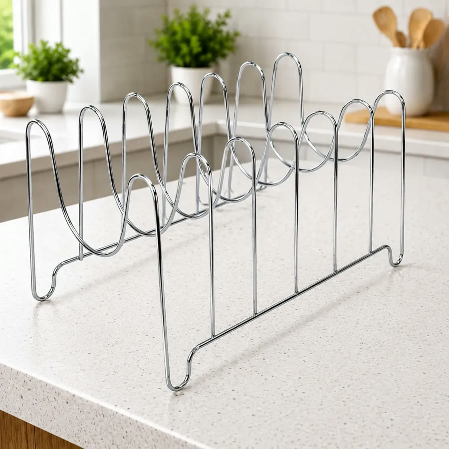
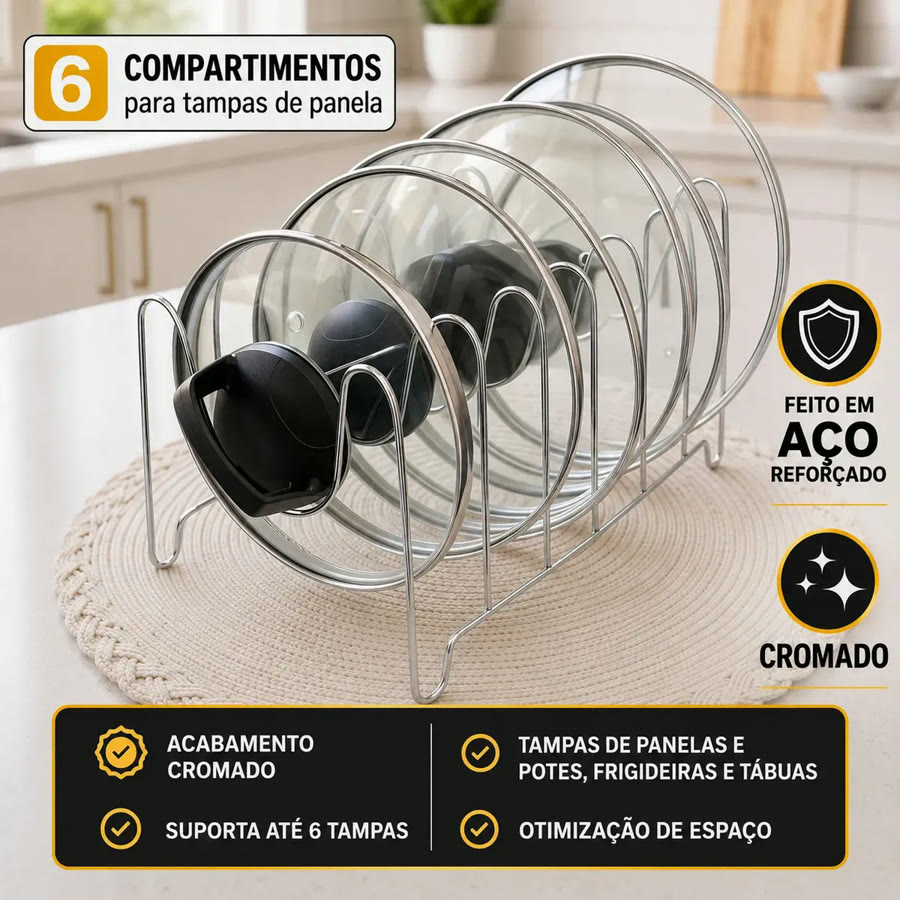
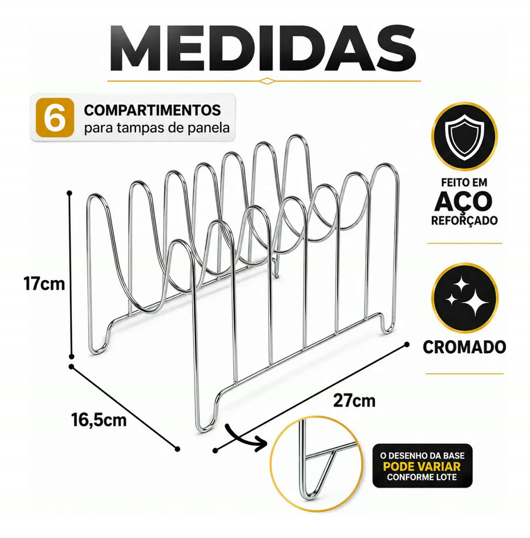
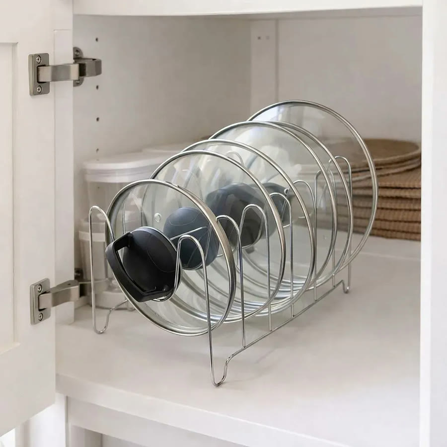
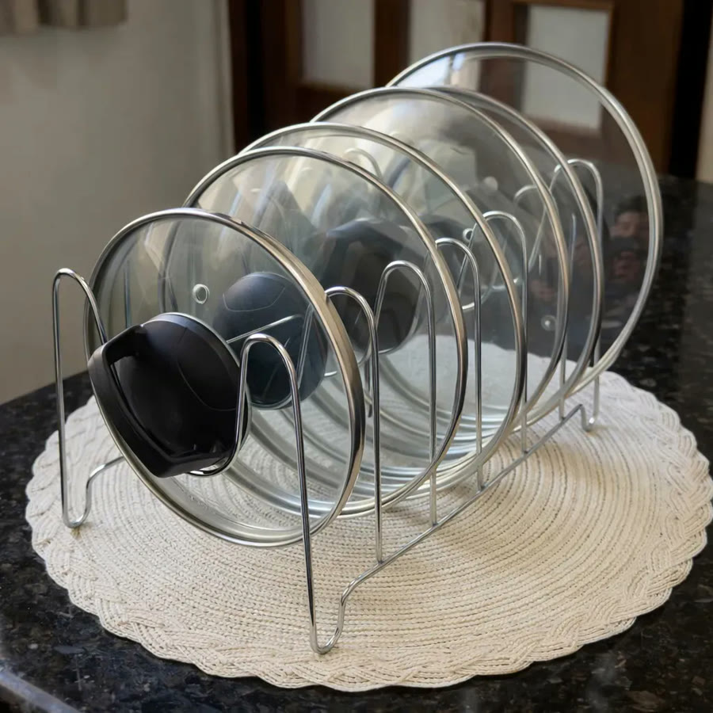
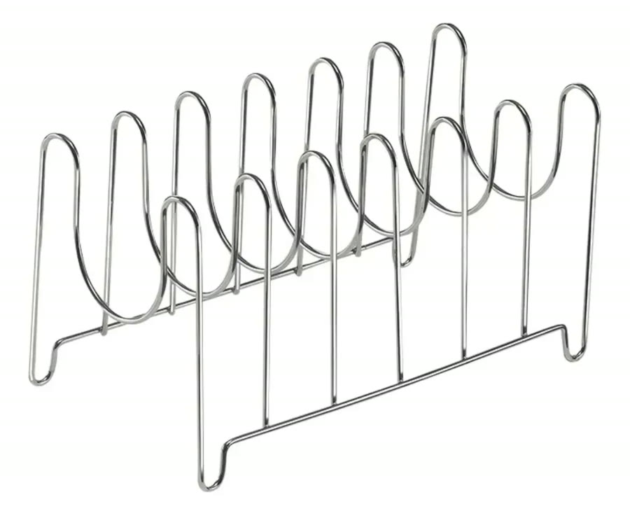

Achado nº 57
Confesso: abro o armário e as tampas desabam.
Suporte organizador de tampas de panela (6 divisórias)
★ 4,7 · mais de 870 avaliações no Mercado Livre







O que diz a página oficial do produto
- É um suporte de aço com acabamento cromado, da marca Boa Dica, com 6 divisórias para tampas
- Guarda em pé tampas de panelas, potes, frigideiras e tábuas
- Mede 27 cm por 17 cm por 17 cm
- Segundo o anúncio, suporta até 10 kg
- Vai pronto para uso, sem montagem, e pode ficar no armário, na prateleira ou na bancada
- Não acompanha as tampas
- No Mercado Livre, tem nota 4,7 com mais de 870 avaliações e mais de mil vendidos
Link de afiliado: se você comprar por ele, a Achadaria pode receber uma comissão, sem custo extra para você. Preço, estoque e entrega são da loja e podem mudar; confira lá antes de comprar.